ヘッドウォータースのフィード
https://zenn.dev/p/headwaters
株式会社ヘッドウォータースのテックブログです。 AIエージェント、生成AI、LLM、Azureのサービスや資格、IoT、XR系などData&AIとApp modernizeに関して幅広く投稿します！
フィード
コーディング・ゼロは実現するのか？
ヘッドウォータースのフィード
孫さんからソフトバンクでコードを書くことはなくなるという話がありましたが、それって可能なのかなーと妄想してみます。まずAgentic RAG Systemの登場により、実行計画をたてマルチエージェントがステップごとに最適なタスクを選択できるようになったことで、ある程度複雑なワークフローをAIエージェントが実行可能なりました。ただ、依然、ユーザーの暗黙知になっている情報をエージェントやシステムが活用できない問題があり、様々な業務/タスクの自動化に向けて大きな障壁になっていると思います。一方でLLMが得意なタスクの一つにコード生成があります。ある程度具体的な指示や機能を提示すれば人を超...
1日前
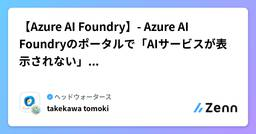
【Azure AI Foundry】- Azure AI Foundryのポータルで「AIサービスが表示されない」問題の原因と対処法
ヘッドウォータースのフィード
執筆日2025/7/18 起きたこと同僚から「Azure AI FoundryのポータルでAIサービスが表示されない」と相談を受けました。確認すると、確かに見当たらない…。なぜ？ 原因は？調査の結果、Foundryプロジェクトで作成していたのが原因でした。 Azure AI Foundryのプロジェクトの種類Azure AI Foundryでは、以下の2種類のプロジェクトがサポートされています。Hub ベースのプロジェクトFoundry プロジェクトhttps://learn.microsoft.com/ja-jp/azure/ai-...
1日前
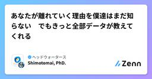
あなたが離れていく理由を僕達はまだ知らない でもきっと全部データが教えてくれる
ヘッドウォータースのフィード
離脱予測分析について２回目です。今回は最近の研究動向を紹介します。離脱分析については以前から多くの研究があります。最近はPOSなどで購買情報のデータ化やサブスクリプションによるビジネスモデルの影響で、ニーズが増えています。特に、これまではWEB経由であったものがスマートフォンのアプリを経由してサービス提供を行うものが増え、顧客の維持継続が重要性を増しています。離脱解析では離脱率を特徴量から識別学習を適用するものや、Coxハザードモデルによる生存解析をするものなどいくつかあります。さらに最近LLMを利用した研究もいくつか発表されています。今回は下の論文を順に紹介していきます...
1日前
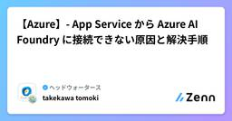
【Azure】- App Service から Azure AI Foundry に接続できない原因と解決手順
ヘッドウォータースのフィード
執筆日2025/7/18 構成図 発生した事象アプリ実行時に、以下のエラーが表示されました。 原因App Service に対して 「Azure AI User」ロール が割り当てられていなかったことが原因です。 解決方法Azure ポータルで対象の App Service を開き、「ID」メニューをクリックシステム割り当て ID の状態を「オン」に変更「Azure ロールの割り当て」をクリック「+ ロールの割り当ての追加（プレビュー）」を選択し、「Azure AI User」ロールを追加これで無事にエラーが解消され、App Servi...
1日前
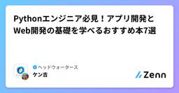
Pythonエンジニア必見！アプリ開発とWeb開発の基礎を学べるおすすめ本7選
ヘッドウォータースのフィード
AIを活用する企業が増えてきたため、Pythonでアプリ開発している企業やAIのチューニングで使用される例が増えてきました。これからPythonエンジニアを目指す方やセカンドスキルで身につけたい方にとって、プログラミングの基礎固めは成功への第一歩です。そこで今回は、アプリ開発の基礎を学べる本や、Web開発に役立つ実践的な書籍を厳選して7冊ご紹介します。プログラミングスキルを磨いてキャリアを一層充実させましょう！ ポジショニングマップ紹介する本が初心者に向いているのかや基礎的なのかをポジショニングしました。ポジショニングマップ基礎＆初心者：プログラミング初心者にピッタリの本...
2日前
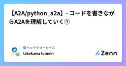
【A2A/python_a2a】- コードを書きながらA2Aを理解していく①
ヘッドウォータースのフィード
執筆日2025/7/17 やることA2Aの勉強をしています。概念は理解できたが、実装がまだできない...python_a2aでコードを書きかながら、A2Aの理解を深めていく今回は、以下の赤枠を差作成する ライブラリのインストールまずは pip でライブラリを導入します。pip install python_a2a Agentを定義する天気予報のダミーデータを返すエージェントを作ってみます。main.pyfrom python_a2a import A2AServer, skill, agent, run_server, TaskStatus, Ta...
2日前
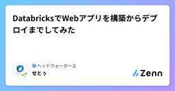
DatabricksでWebアプリを構築からデプロイまでしてみた
ヘッドウォータースのフィード
Databricksでアプリがデプロイできるようになたよ今月からDatabricks Appが日本リージョンでも利用できるようになりました。ーDatabricks Appとは？ーDatabricks Appsは、データやAIを活用したアプリケーションをDatabricksプラットフォーム上で直接構築・デプロイできる新機能です。従来必要だった個別のインフラストラクチャ管理が不要となり、Unity CatalogやDatabricks SQLなどの既存サービスとシームレスに統合できます。PythonやNode.jsの主要フレームワークに対応し、インタラクティブなダッシュボードから...
4日前
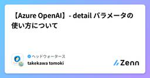
【Azure OpenAI】- detail パラメータの使い方について
ヘッドウォータースのフィード
執筆日2025/7/15 解像度制御オプションとは？Azure OpenAIのVision対応モデルでは、画像の処理精度と速度／コストをバランスよく制御するために、detail パラメータで解像度の指定ができます。指定可能な値は以下の3つです。オプション内容auto既定の設定。 モデルは、画像入力のサイズに基づいて、lowまたはhighを決定します。low512×512 の低解像度で高速処理、トークン消費を節約 できます。その結果、微細さが重要ではないシナリオでは応答が速くなり、トークンの消費量が少なくなります。high高解像度でより...
4日前
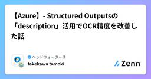
【Azure】- Structured Outputsの「description」活用でOCR精度を改善した話
ヘッドウォータースのフィード
執筆日2025/7/15 はじめにStructured outputsを使う際、普段は Pydantic などで型を定義している方も多いのではないでしょうか？たとえば、以下のような形式です。class Test(BaseModel): name: str age: intこのように型を使うと、LLMが構造化された出力を生成してくれて便利ですよね。私自身も登場の時からStructured outputsをよく活用しています。https://zenn.dev/headwaters/articles/c11fd63ceb09cd OCRで精度が出なかっ...
4日前
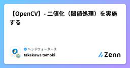
【OpenCV】- 二値化（閾値処理）を実施する
ヘッドウォータースのフィード
執筆日2025/7/14 やることOpenCVを使い二値化の検証を実施します。 使う画像弊社のロゴを使います。なんでも大丈夫です。 二値化（閾値を自分で設定する）main.pyimport cv2# 画像の読み込みimg = cv2.imread("<ファイルパス>", 0)# 閾値の設定threshold = 100# 二値化(閾値100を超えた画素を255にする。)ret, img_thresh = cv2.threshold(img, threshold, 255, cv2.THRESH_BINARY)print(f"...
6日前
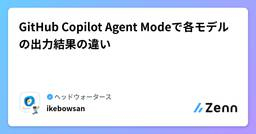
GitHub Copilot Agent Modeで各モデルの出力結果の違い
ヘッドウォータースのフィード
エージェントモードが登場してから何気なくGPT-4.1を使っていましたが、改めて同じタスクを渡した時にどのような違いがあるのか気になったので検証してみました。 対象のモデルGPT-4.1Claude Sonnet 4Gemini 2.5 Proo4-mini 精度比較に使用するタスクVecel AI SDKを使用したGenerative UIのアプリのバージョンアップ対応とAI SDKRSC→AI SDK UIへの移行を依頼してみます。このアプリは約1年前に作ったのでバージョンと中の書き方が古いままです。当時は「v3.x」だったのですが、現在は「v4.x」が安定...
6日前
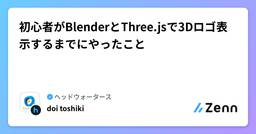
初心者がBlenderとThree.jsで3Dロゴ表示するまでにやったこと
ヘッドウォータースのフィード
はじめに「Blenderで作成した3DモデルをWeb上に表示したい」その思いから始まった実践記録です最終的には Three.js + GLTFLoader を使って、Blenderから出力した .glb ファイルを読み込み、Webブラウザ上でマウス操作可能な3Dロゴを表示できるようになりました 目標Blenderで3Dロゴを作成.glb形式でエクスポートThree.js + HTMLで表示 使用技術・環境Blender 4.x（3Dモデル作成）Three.js（WebGL）GLTFLoader / OrbitControls（Three.js公式...
6日前
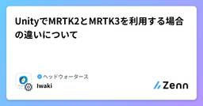
UnityでMRTK2とMRTK3を利用する場合の違いについて
ヘッドウォータースのフィード
Unityにおける MRTK2 と MRTK3 の違いと選び方 MRTK2 vs MRTK3 概要比較項目MRTK2MRTK3対応Unityバージョン2019.4〜2021.32021.3〜2023以降基盤独自フレームワークUnity XR Interaction Toolkit (XRI)OpenXR対応後付けで部分対応初期から完全対応柔軟性柔軟だが複雑モジュール式で扱いやすい学習コストドキュメントが豊富構成に慣れる必要ありパフォーマンス安定動作軽量化・最適化済み将来性保守フェーズ継続的に開発...
6日前

零れ落ちるすべてを拾うと言うか、欲深きことよ... ー ならば継続か離脱か、データの深淵に眠るChurnの徴を読み解くがいい
ヘッドウォータースのフィード
タイトルの世界観だけ間違っていますが、中身は真面目に書いていますのでご安心ください。「最近、弊社サービスの利用者が減ってる気がする…」新規顧客の獲得に力を入れる企業は多いですが、実は既存顧客が離れていく理由を知ることこそ、ビジネスを安定して成長させるカギです。そこで登場するのが Churn（離脱）解析。Churnは離脱という意味です。つまり顧客離脱予測というとわかりやすいかもしれません。「どんな人が、どんなタイミングで、なぜ離れてしまうのか？」をデータから読み解くことで、予防策を打ったり、サービス改善のヒントを得たりできます。現代のビジネスにおいて重要なのが「顧客の維持」です。...
8日前
【Durable Functions】Python で動かしてみて概要を理解する
ヘッドウォータースのフィード
はじめに以前から気になっていた Durable Functions を概要から理解したいです。C# で開発することが定番だと思いますが、筆者は Python をよく使うので、Python 版で理解していきます。 ターゲットDurable Functions で何ができるかあまりよくわからない方Durable Functions を Python で使ってみたい方 Durable Functions 概要Azure Functions の拡張機能であり、長時間実行するような、ワークフロー実装に最適な機能です。https://learn.microsoft.com...
10日前
MacbookからLinux OSのAzure VMにリモートデスクトップでアクセスする方法
ヘッドウォータースのフィード
Windows OSのAzure VMだとリモートデスクトップがデフォルトで出来ますが、Linux OSは設定が必要だったんで紹介 前提ホストPC ... Macbook(Appleチップ)仮想マシン... Azure Virtual Machine(LinuxOS) 方法 1. Azure VM側の設定Azure Portalにアクセスし、VMを起動。作成したAzure VMリソースのネットワーク設定をクリックポートルールの作成から受信ポートルールをクリックサービスはRDPを選択し、宛先ポート範囲に3389を入力する。MacbookのTermina...
12日前
【Copilot studio】- Bring Your Own Modelの設定手順
ヘッドウォータースのフィード
執筆日2025/7/7 Bring Your Own Modelとは？Microsoft Build 2025で発表されたBring Your Own Model。Azure AI Foundry上のモデルをCopilot studioでも使えるようにできる仕組みです。 前提Copilot studioでエージェントを作成済みであることAzure AI Foundryでモデルをデプロイ済みであること 手順ツール>+ツールを追加するをクリックするプロンプト>+新しいツールをクリックするプロンプトをクリックするモデル&g...
12日前
【Copilot studio】- Outlook MCPサーバーを試す
ヘッドウォータースのフィード
執筆日2025/07/07 検証内容Copilot studioに登場した、OutlookのMCPサーバー。何ができるか気になったので検証する。 Outlook MCPサーバーとは？以下の３つが登場しました。Contact Management MCP ServerEmail Management MCP ServerMeeting Management MCP Server Contact Management MCP Server連絡先の操作ができるMCPサーバツール名説明GetContactFolders連絡先フォルダを...
12日前
Copilot Notebookを使えば「1業務1RAG」が実現できるのでは？
ヘッドウォータースのフィード
1. 2025年6月に登場したCopilot NotebookCopilot Notebook は、2025年6月にMicrosoftからリリースされた長文かつ構造的に対話できる新しいAIチャットです。Microsoft 365 Copilotの1機能として組み込まれているのですが、従来のCopilotチャットでは難しかった以下のことが可能となっています。過去のチャット履歴を一貫して参照する参照する資料を随時選択・追加できる複数資料を同時に参照できる返信方法を指示できるhttps://techcommunity.microsoft.com/blog/micro...
13日前
【Azure AI Foundry】o3-deep-researchを検証する
ヘッドウォータースのフィード
執筆日2025/7/5 o3-deep-researchとは？Azure AI Foundry Agent Serviceにおいて提供される、マルチステップWebリサーチ特化のAIモデルです。Azure OpenAIのモデルをベースにFine-tuningされており、Grounding with Bing Search を用いてリアルタイムなWeb情報を収集・分析・要約し、出典付きの網羅的なレポートを生成します。 サポートしているリージョンWest USNorway East※2025年7月時点での対応リージョン SDKPython SDK：利用...
14日前